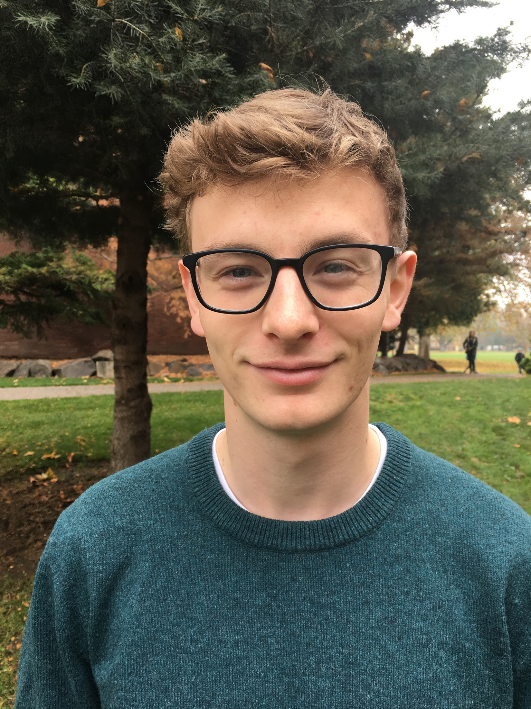

About Me
Growing up in Washington, I attended highschool at Eastside Preparatory School and drove out east to Whitman College in Walla Walla. I graduated from Whitman in 2018 with a major in Biology and minor in Computer Science. My passion for biology and technology landed me at Adaptive Biotechnologies in Eastlake where I worked in the Production Lab where I primarily performed DNA extractions.
Programming has always been a hobby for me, but when I broke my arm and was unable to work in the lab in August 2018 I was able to put that hobby to work. As my pipetting arm was out of commission, I ended up helping my boss with some VBA scripts for excel. That quickly got his attention and he sent me to help out with the software team until I was out of the sling. My hard work paid off, and I kept doing side projects for the software team before officially switching teams in the spring of 2019.
Outside of work I have a passion for reptiles and amphibians and run quite a zoo out of my house. I have a collection of snakes and have several breeding projects with various types of dart frog.